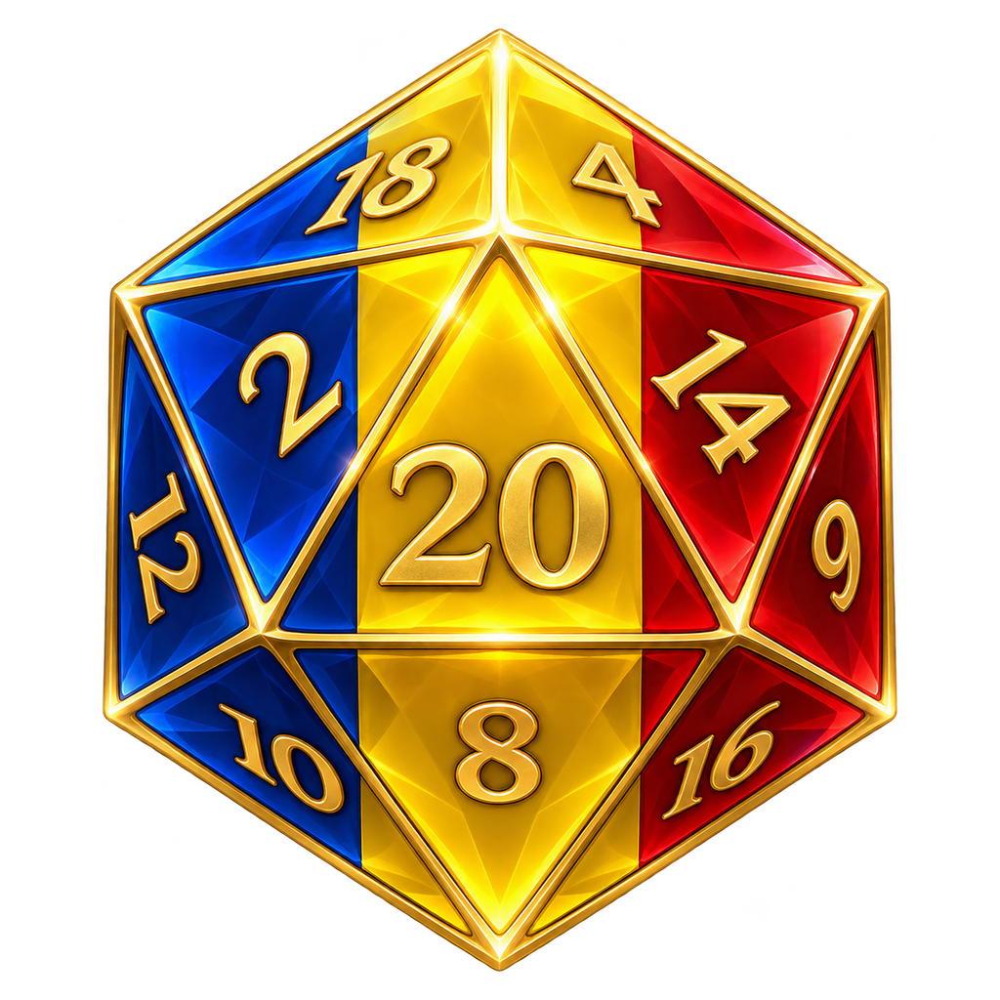

Tradus manual.
Traducerea este realizată de mine, Gabrielish, manual, fără AI sau traducere automată. Aleg fiecare formulare pentru sens, ton și context.

Alegerile tale merită să fie înțelese, nu doar citite. Realizez o traducere română care păstrează vocea personajelor, sensul dialogurilor și magia lumii din Baldur’s Gate 3.
Traducerea este realizată de mine, Gabrielish, manual, fără AI sau traducere automată. Aleg fiecare formulare pentru sens, ton și context.
Feminin și masculin acolo unde contează. Verificarea replicilor în context este parte din munca de traducere.
Un proiect neoficial și gratuit. Fiecare observație din joc mă ajută să aduc traducerea mai aproape de forma ei finală.
Proiect în dezvoltare. Acestea sunt principiile traducerii, nu o promisiune că fiecare replică din joc este deja finalizată.
Eroina ta nu trebuie să fie „vindecat”. Și ținta unei vrăji nu ar trebui să-și piardă genul în traducere.
De la o singură literă la o formulare întreagă, lucrez la o română care ține cont de cine vorbește și despre cine.
Shadowheart a lansat Cuvânt de Vindecare.
Shadowheart a vindecat-o pe Tav cu 7 Puncte de Viață.
Tav a fost vindecată cu 7 Puncte de Viață.
Lae’zel a ratat-o pe Tav.
Exemplu ilustrativ de acord. Demonstrația de pe site nu rulează modul și nu reflectă timpul de răspuns din joc.

Ironia, ezitarea, curajul. O traducere bună păstrează mai mult decât definiția unui cuvânt.
Scopul meu: dialoguri care sună firesc, o terminologie coerentă și descrieri care te ajută să joci, nu te scot din poveste.
Dialogurile sunt traduse manual și revizuite pentru ton, sens și acord. Obiectivul este ca personajele să rămână ele însele, și în română.
Traduc și verific textele în joc, apoi le îmbunătățesc pe baza feedbackului tău. Proiectul nu este încă finalizat.
Traducerea de bază este în Early Access. Descarcă versiunea publică și consultă pe Nexus conținutul inclus în fiecare actualizare.
Vezi versiunea publicăRevizie de dialoguri, terminologie și acord. Extensia experimentală pentru jurnal are ca punct de plecare v10, cu Script Extender 33 experimental.
Explorează exemplulDialoguri, cărți, descrieri și restul textelor jocului. Obiectivul este o traducere integrală, revizuită, fără să sacrific calitatea pentru viteză.
Ajută cu feedbackIa traducerea, pornește aventura și spune-mi ce poate suna mai bine. Proiectul este și rămâne gratuit.
Descarcă de pe Nexus Mods Early Access · traducere neoficială · de GabrielishFișierele și cerințele actualizate sunt pe pagina Nexus. Nu amesteca pachete de test vechi cu versiunea publică.
Consultă descrierea modului înainte de instalare și păstrează o copie a fișierelor pe care le înlocuiești.
O captură, replica și contextul sunt suficiente pentru a mă ajuta să corectez un text sau un acord.
Nu încă. Proiectul este în Early Access și urmărește traducerea integrală. Pagina Nexus rămâne sursa pentru stadiul versiunii publice și conținutul inclus.
Nu. Textele traducerii sunt realizate manual, fără AI sau traducere automată. Revizia urmărește sensul, vocea personajului și acordul gramatical în context.
Traducerea de bază și extensia pentru acordul din jurnal sunt lucruri diferite. Prototipul de jurnal v10 folosește Script Extender 33 experimental; nu îl confunda cu cerințele pachetului public. Verifică întotdeauna instrucțiunile fișierului pe care îl instalezi.
În secțiunea Posts de pe Nexus Mods. Include o captură și, când acordul este problema, personajul și genul său în salvarea respectivă.

În spatele fiecărei replici traduse sunt timp, atenție și multe verificări în joc. Dacă îți place să descoperi Faerûn în română și vrei să susții munca mea, o poți face pe Patreon sau cu o cafea pe Ko-fi.
Sprijinul este complet opțional. Traducerea este și rămâne gratuită — iar feedbackul tău contează la fel de mult.
Pentru poveștile pe care vrem să le trăim.
Și în limba noastră.